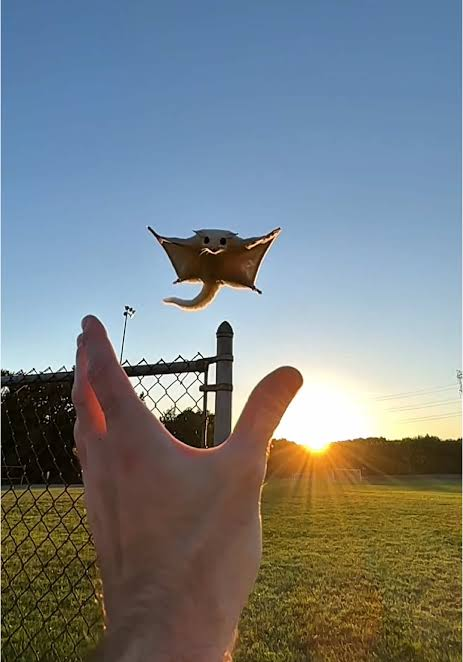

Bloodshed and Violence
Nans have historically been used in lethal combat since around
5000 BC due to their stretchy capabilities. Nan warriors
(Norrior, for short) would throw about
6-7
Nans
at a time at a compatant such that the Nans instinctually latch
onto their opponent. Once attached, the Norrior (Nan warrior)
would reach into their special wafer pouch to throw a bunch of
wafers at the enemy. Once these wafers make contact the oponent
will be consumed by the nans.
This is not because the Nans are vicious creatures
but rather that the Nans cannot tell the difference
between wafer and not wafer when a wafer is near,
thus all Nan related injuries from incidents like
these are purely accidental on behalf of the Nan

technique to recall their nans to them.